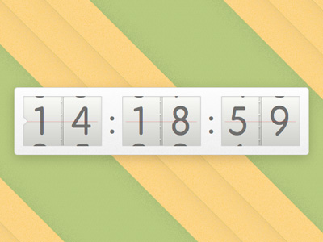
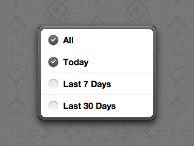

I wanted to see how easy and dynamic I could create this animation that Hudson-Peralta created with JS in CSS. Take a look!
Oh, did I mention it's responsive?

I came across Dave's beautifully crafted counter on Dribbble and decided to take a crack at coding it. Enjoy!

Morgan posted this iOS Popover variation on Dribbble. I had a few minutes free so I decided to see what I could cook up. This is the result.
I needed something a little more up to date so I created a simple VCard site with quick links to my homes around the web.